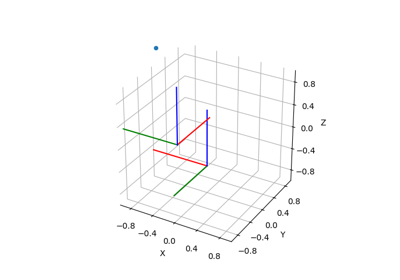

pytransform3d.rotations.matrix_from_axis_angle¶
- pytransform3d.rotations.matrix_from_axis_angle(a)[source]¶
Compute rotation matrix from axis-angle.
This is called exponential map or Rodrigues’ formula.
![\boldsymbol{R}(\hat{\boldsymbol{\omega}}, \theta)
=
Exp(\hat{\boldsymbol{\omega}} \theta)
=
\cos{\theta} \boldsymbol{I}
+ \sin{\theta} \left[\hat{\boldsymbol{\omega}}\right]
+ (1 - \cos{\theta})
\hat{\boldsymbol{\omega}}\hat{\boldsymbol{\omega}}^T
=
\boldsymbol{I}
+ \sin{\theta} \left[\hat{\boldsymbol{\omega}}\right]
+ (1 - \cos{\theta}) \left[\hat{\boldsymbol{\omega}}\right]^2](../_images/math/be8d0ad26ede45628d5bf1f528efe5b5e7ecad75.png)
This typically results in an active rotation matrix.
- Parameters:
- aarray-like, shape (4,)
Axis of rotation and rotation angle: (x, y, z, angle)
- Returns:
- Rarray, shape (3, 3)
Rotation matrix
Examples using pytransform3d.rotations.matrix_from_axis_angle¶


Transform Concatenation

Axis-Angle Representation from Two Direction Vectors
Axis-Angle Representation from Two Direction Vectors